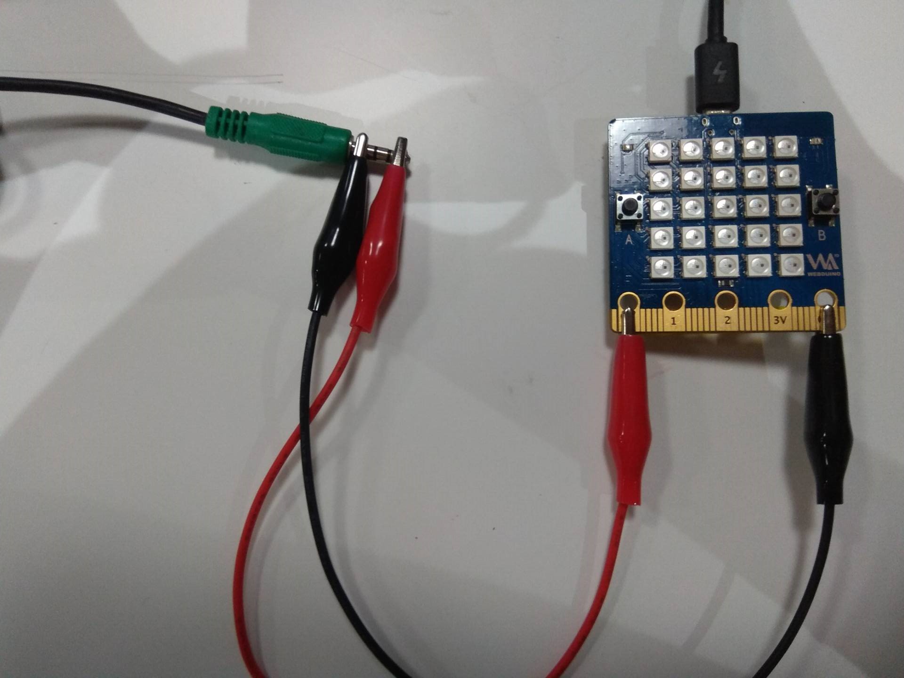
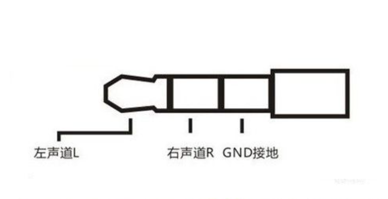
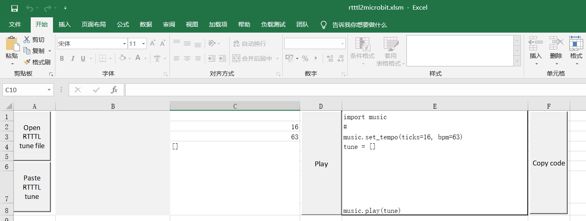
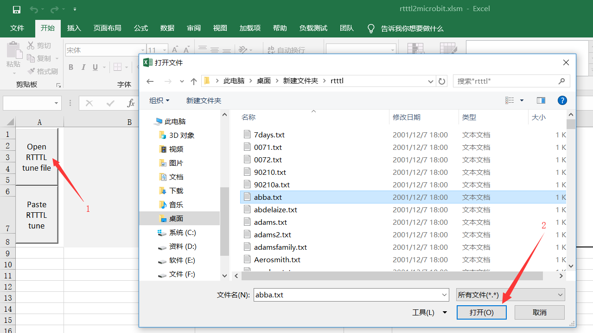
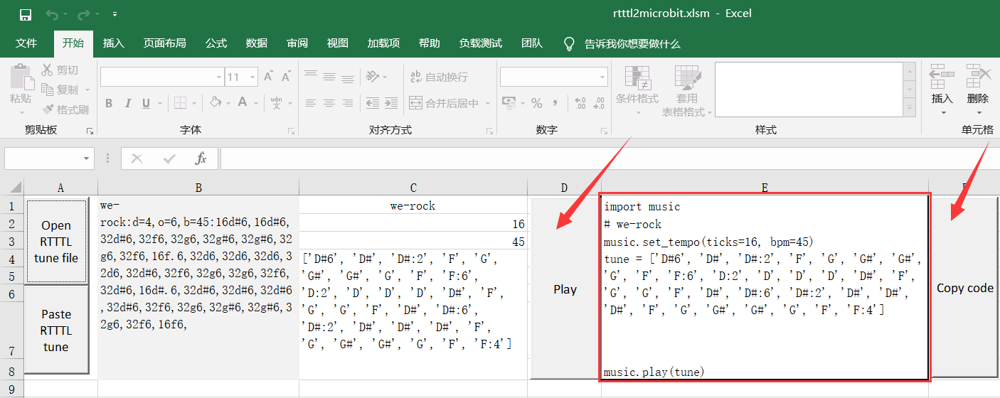

播放简单的音乐
我提供了一个 MIDI 播放功能模块，它可以对指定的 蜂鸣器 进行 PWM 输出，从而播放出音乐，虽然你可能并不需要知道这些。
咳咳，废话不多说，来点音乐，在板上已经预先接好了一个内置的蜂鸣器，其引脚位置为25，如果你有一定的动手能力，可以之后来学习如何自己接一个 蜂鸣器来播放音乐。
不要装压电式蜂鸣器，它只能播放单个声调。
使用代码如下（接口可参考 Microbit 文档）
import music
music.play(music.NYAN)
可以看到有如下列表，这都是我们内置的音乐。
music.DADADADUM
music.ENTERTAINER
music.PRELUDE
music.ODE
music.NYAN
music.RINGTONE
music.FUNK
music.BLUES
music.BIRTHDAY
music.WEDDING
music.FUNERAL
music.PUNCHLINE
music.PYTHON
music.BADDY
music.CHASE
music.BA_DING
music.WAWAWAWAA
music.JUMP_UP
music.JUMP_DOWN
music.POWER_UP
music.POWER_DOWN
挑选一些出来听听，应该会有你喜欢的。
创作一首曲子
写下一段 Python 的列表 ["C4:4", "D4", "C", "E:8"]，就代表一段音乐。
这要如何理解呢？
可以认为每一个元素都是一个音符，它的格式满足如下：
NOTE[octave][:duration]
首先要有一丁点的乐理基本理解。
NOTE 指这一节点的音阶，通俗来讲，音乐里的 C D E F G A B 就是音阶，如 "C" 指 do，所以 C D E F G A B 就是 do re mi fa so la xi。
octave 指这一节点的八度，八度就是指音程关系，简单一点讲，就是你唱 1 2 3 4 5 6 7 1 （注释：1234567 对应的音名分别是CDEFGAB），第一个 1 就是最后一个 1 的低八度，最后一个 1 就是第一个1的高八度，低音到高音，越小就越低音。
duration 指这一节点的拍子数，简单理解为该节点音符播放持续的时间。
举例来说：
"C4:4" 相当于 C（Do）在 4 （中音部分）的音符，接着 :4 指持续四个拍子，默认的拍子时长是 125 ms，即播放时长（duration）为 0.5s。
如果你给节点 NOTE 命名为 R 那么在指定的时长里，喇叭就不会播放任何声音。
为了很好解释这些，我们来看如下一章节的案例。
music 模块默认的拍子定位为 ticks=4, bmp=120，ticks指某个音符的拍子类型缺省值，如：‘C4’ 且 ticks=4，相当于‘C4:4’，意味着这个节点在 bpm 的基准下播放的时长，而 bpm 指每分钟节拍数的单位，电子音乐当中正是依赖于用 BPM 数值的高低来描述不同音乐的速率。
根据公式可以算出基准的拍子 beats = 60(s) * 000 / 120 / ticks，如果是默认值，则拍子单位时长为 60000/120/4 = 125 milliseconds。
试试播放音乐
亲自试试这段代码吧。
import music
music.play([ "C4", "D4", "E4", "F4", "G4", "A4", "B4", "C5"])
music.play([ "D1", "D2", "D3", "D4", "D5", "D6", "D7", "D8"])
播放二只老虎
我们为了能够在板子上播放这首经典的两只老虎，准备了如下代码。
import music
tune = ["C4:4", "D4:4", "E4:4", "C4:4", "C4:4", "D4:4", "E4:4", "C4:4",
"E4:4", "F4:4", "G4:8", "E4:4", "F4:4", "G4:8"]
music.play(tune)
而且神奇的是并不只会这样哦，它还可以进一步简化作曲过程，比如说，现在的节点 ‘C4:4’ 将会影响到之后的八度配置，直到有新的替换。 所以你可以这样写：
import music
tune = ["C4:4", "D", "E", "C", "C", "D", "E", "C", "E", "F", "G:8",
"E:4", "F", "G:8"]
music.play(tune)
是不是产生了同样的效果了呢？
特殊的声音效果
music 让你制作非音符的声音，比如下面这里我们就创建了一个警笛声
from microbit import *
import music
while True:
music.pitch(range(880, 1760, 16), 15)
sleep(50)
music.pitch(range(1760, 880, -16), 15)
sleep(50)
稍微注意了，music.pitch 方法是使用它的实例，它需要一个频率，440的频率相当于一场用来调音的音乐会 a 的频率。
另外，在这个案例中，range函数是被用作生成一个数字的值，这些数字定义了音调的音高，这三个参数分别分开始值，结束值，以及梯度值。因此，这里第一个range 的意思是。创造一个频率值从 880 开始，以 16 的跨度递增到 1760，而至于第二个 range 是说创造一个 1760 以 16 的跨度来递减到 880。这就使得我们可以发出 一上一下 像警笛一样的声音。
最后我们还使用了while Ture： 它会让这个警笛声一直持续下去的，是不是很有意思呢？
动手连接你的音响
大家在使用板子播放音乐的时候有没有发现声音有点小呢，在这里我们向大家介绍如何把板子连接到音响，用音响来播放音乐，如下图所示

P0口连接音频线的左声道或者右声道，GND 连接音频线的GND

从网络上获取乐谱
第一次接触这种音乐的格式不懂乐理的同学可能就有点懵了。那有没有一种可以快速获取乐谱的方法呢？有网友专门制作了一个转换工具，可以自动生成音频格式的数据。那就让我们来试试用这个工具生成板子可以播放的音乐数据吧。
这个工具由 fizban99 制作。
https://github.com/fizban99/microbit_rttl
转换的工作是一个excel的文件来实现的，我们首先下载这个excel文件，点击下载
我们有了转换的工具了，接下来就需要下载音乐源文件了,点击下面连接进行下载
Zip file of Mixed Tunes 1 (450tunes)
Zip file of Mixed Tunes 2 (375 tunes)
Zip file of Mixed Tunes 3 (10,000 tunes) Zip file of TV Theme Tunes (50 tunes)
Zip file of Christmas Tunes (70 tunes)
把下载的音乐源文件都解压，所有准备工作做好之后，打开我们之前下载的excel文件，你会见到像下面的界面。

点击Open RTTTL tune file，它会自动弹出文件管理器，找到我们刚才解压的文件中的其中一个，选中要转换的音乐文件后，点击打开

完成上面的步骤后我们就完成了转换的工作，点击 play 可以播放音乐文件，注意：这里的 Copy code 是使用不了的复制出来的是乱码，所以我们直接复制红框中的内容就好了

复制转换出来的代码,就可以让板子播放音乐了
import music
music.set_tempo(ticks=16, bpm=45)
tune = ['D#6', 'D#', 'D#:2', 'F', 'G', 'G#', 'G#', 'G', 'F', 'F:6',
'D:2', 'D', 'D', 'D', 'D#','F', 'G', 'G', 'F', 'D#', 'D#:6',
'D#:2', 'D#', 'D#', 'D#', 'F', 'G', 'G#', 'G#', 'G', 'F', 'F:4']
music.play(tune)